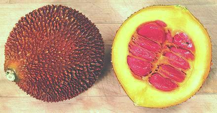
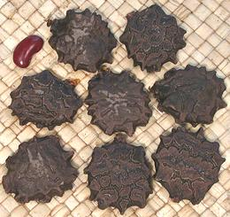

Gac

["Baby Jackfruit", Spiny Bitter Gourd, Sweet Gourd, Cochinchin Gourd
(English); Gac, Qua Gac (Viet); Fuk Kao (Thai); M. cochinchinensis]
Despite the common English name and it's outward and inward appearance,
Gac is completely unrelated to the actual
Jackfruit.. It grows on vines like any
other gourd or cucumber and has red arils surrounding the seeds just
like a ripe Bitter Gourd should, but they
are very large. This gourd is eaten in Vietnam, combined with glutinous
rice in a dish called xôi gac. Gac is highly seasonal,
available from December into February. The photo specimen was 5-1/4
inches diameter and weighed 2-1/2 pounds.
Gac has a higher concentration of bioavailable beta-carotene
(Vitamin A) than any other fruit or vegetable, 10 times that of carrots,
and 70 times the lycopene provided by tomatoes. It is also very high in
a number of important phytonutrients and Vitamin E, and the pulp contains
a fair amount of oils which efficiently transport these nutrients. It is
now being sold in the West in capsule form as a nutritional supplement.
Photo © cg1
.
More on Gourds.
General:
This gourd is eaten only in Vietnam (or by
Vietnamese elsewhere), and always with glutenous rice for the single dish
xôi gac. The part that is eaten is the red aril surrounding
the seeds. Sometimes the seeds are roasted and eaten as a snack.
Caution:
you don't want to eat the shell flesh. One commenter
said he didn't know that and just a small piece was the worst thing he'd
ever tasted and made him sick for two days. Well, I've chewed some up
(but not swallowed a significant amount) and to me it just tasted like a
badly over-ripe bitter melon. Unripe Gac can be eaten as well and can be
sliced and fried. I'd expect it to tastes a bit like an unripe bitter
melon, but I won't know for sure until I grow some plants.
Buying & Storing:
In North America
you can sometimes find this gourd in the frozen food section of a market
serving a Vietnamese community. Fresh Gac is not available, but it may
be soon as a Vietnamese seed vendor has opened a nursury in the USA. If
frozen, just keep it frozen until needed. If fresh, it is so loaded
with antioxidants it'll keep a week or more at room temperature.
Several vendors sell seeds so you could always grow your own if you
live in a reasonably warm region. It is a perenial, but you need to plant
enough seeds to assure you have at least one male plant.

Cooking:
Very simple. Scoop the red stuff out of the
shell and remove the seeds. This is best done by breaking through the
membrane between the pulp and the seed. Then just peel off the membrane
and the seed will be clean. Mash the pulp well and mix with glutenous
rice (glutenous rice is normally soaked overnight to prepare it for
cooking). Put in a steamer and steam for about an hour (glutenous rice
is normally cooked in a steamer). Mix in some finely granulated sugar
to taste and it's ready ready to be pressed into oiled molds and turned
out onto a dish. It is usually decorated with one (if a small mold) or
several (if a large mold) of the seeds to attest that it's genuine, not
made with dye.
A fancier version is molded with a layer of mashed mung beans, about
1/3 red rice, 1/3 mung beans and then a final 1/3 of red rice.
Yield:
A 2-1/2 pound gourd (costing 2009 US $2.99 /
pound) yielded 6 ounces of pulp.
Seeds
The seeds can be roasted, shelled and eaten. They
are flat so they can be roasted in a pan with a little oil. They are a little
crunchy but do have more than a hint of that bitter melon bitterness some
like and some don't. They are also used in traditional Chinese medicine.
Photo © cg1.
gd_gacz 090904 - www.clovegarden.com
©Andrew Grygus - agryg@clovegaden.com - Photos on this
page not otherwise credited are © cg1 -
Linking to and non-commercial use of this page permitted